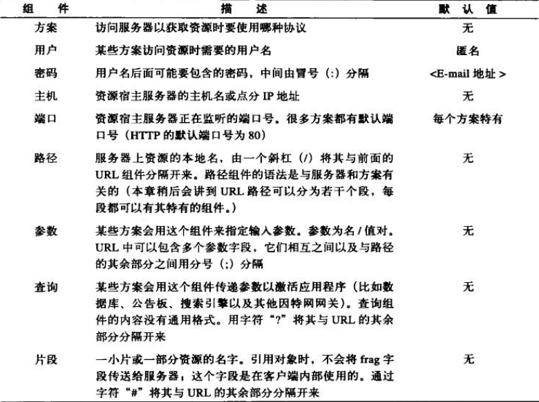

2. URL与资源¶

2.1. URL语法¶
大多数URL的格式：
<scheme>://<user>:<password>@<host>:<port>/<path>;<params>?<query>#<frag>
其中最重要的是scheme, host, path。

2.3. 转义字符¶
为了在URL中表示各种不安全的字符， 需要在URL用转义字符来表示这些不安全的字符。
这种转义表示法包含一个百分号，后面跟着两个表示字符ASCII码的16进制数。
| 字符 | ASCII码 | 示例URL |
|---|---|---|
| ~ | 126(0x7E) | http://www.joes-hardware.com/%7Ejoe |
| 空格 | 32(0x20) | http://www.joes-hardware.com/more%20tools.html |
2.4. 保留字符¶
在URL中，有几个字符被保留起来，有特殊的用途。